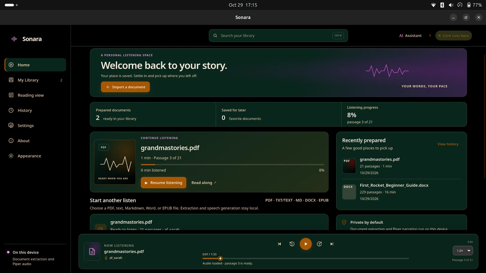

Bring the formats you use
Prepare PDF, EPUB, TXT/TEXT, Markdown, and DOCX files in the desktop app. Extraction can vary with document layout; scanned PDFs need local OCR tools.
Sonara turns the files you already read into a focused desktop listening session, with speech prepared on your device.
Checking the latest release…

Reports, research, books, and notes do not always fit into a quiet hour with a screen. Sonara gives those documents a spoken form you can follow, pause, and come back to.
It is a desktop reader built around the source document and its narration—not a new library to fill or a service that needs your files.
Prepare PDF, EPUB, TXT/TEXT, Markdown, and DOCX files in the desktop app. Extraction can vary with document layout; scanned PDFs need local OCR tools.
Use installed Piper voices, or configure the optional Kokoro integration and its local model files. Kokoro remains unverified on the currently documented runtime.
Play, pause, seek, move between generated passages, adjust speed, and save a listening position for the current document.
Preview the spoken-text layer before synthesis. Supported abbreviation and measurement expansions do not rewrite the source document.
The document assistant is separate from basic reading and speech. Its provider is configured independently and may be local or remote.
Sonara extracts text locally, then prepares speech with a configured local engine. Some complex layouts may need a closer look.
Scanned PDFs can use the optional local OCR path when its system tools are installed.
Sonara keeps the steps close to the document and the controls you need.
Open a supported file with the desktop app’s native picker.
Select an installed Piper voice or a configured Kokoro voice.
Sonara extracts the text and synthesizes mapped audio passages locally.
Use the player controls and saved position to continue the current session.
Sonara keeps original text separate from supported pronunciation and measurement adjustments. Switch the example to see the difference.
This guide covers 5 km/h. See e.g. the opening note.
This guide covers five kilometers per hour. See for example the opening note.
Example only. Your source document remains unchanged.
Speech engines create audio. Optional language models power separate assistant features.
Local text-to-speech through the installed Piper runtime and voice model. Voice availability depends on the models installed on your device.
An optional local speech integration. It needs a compatible Python environment, the kokoro-onnx package, and local model files; this setup has not yet been verified for the current runtime.
An optional language-model integration for assistant features; it is not a speech engine and is not required to read a document aloud.
Document extraction, audio generation, and playback use local processing in the desktop workflow. Sonara does not automatically download voice models.
Assistant providers are configured separately. If you choose an external provider and use an assistant feature, relevant document context may be sent to that provider. Review the provider and settings before use.
Read the architecture notesThe desktop session keeps extracted text and playback controls within reach. Audio progress is saved separately; paragraph-level highlighting is not currently provided.
A document begins as its own text, with paragraph breaks preserved where extraction provides them.
Choose from the voice models available on this device before preparing audio.
Pause, seek, adjust speed, navigate audio passages, and save your position.
Sonara is a desktop document reader that prepares local text-to-speech audio, with playback and saved progress for the current reading session.
The current desktop picker accepts PDF, EPUB, TXT/TEXT, Markdown, and DOCX. Extraction depends on the document’s structure; scanned PDFs require the optional local OCR tools.
Core extraction and speech can run locally once the required runtime, system tools, and voice/model files are available. They are not all bundled or downloaded automatically.
Piper is the default engine and lists installed voice models. Kokoro has an optional integration, but its runtime setup remains unverified; it needs a compatible Python environment and local model files. Voices depend on your local setup.
Document extraction and speech generation run locally. Assistant providers are configured separately; an external provider may receive document context when you use its assistant features.
The tagged-release workflow is configured to build installers for Windows, Linux, and macOS. A platform download appears above after a release is published; check the release page for all available files.
Use the download selector above to find the latest build for your platform and architecture, or open the latest GitHub Release to browse every installer.
Choose your platform above for the current installer, or explore the source and release notes on GitHub.
Open the latest release